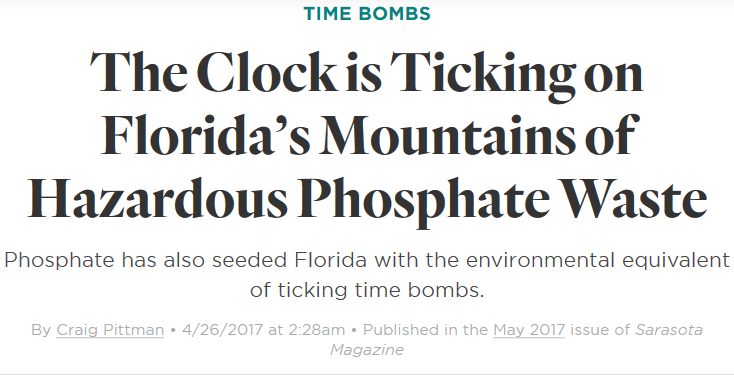

Anthropocene - The Human Footprint on Earth
"The Anthropocene, the concept that the Earth has moved into a novel geological epoch characterized by human domination of the planetary system, is an increasingly prevalent framework for debate both in academia and as a wider cultural and policy zeitgeist."
Source: Malhi (2017)Inspired by The Anthropocene Project, a collaboration between artists Nicholas de Pencier, Edward Burtynsky and Jennifer Baichwal to visualize the human impact on the land, please join me for a tour of select places where the human footprint is dramatically visible from space.
Phosphor Tailings, Florida
"... But from time to time, a problem crops up at one of the gyp stacks. Then the pond pooled on top spills out and threatens to poison a creek, a bay, or drinking water for miles around. The phosphate industry’s benign image cracks apart."
Source: Sarasota Magazine (May 2017)
Open Pit Mining, Germany

"Garzweiler is a surface mine in the German state of North-Rhine Westphalia ... used for mining lignite. The mine currently has a size of 48 km² and got its name from the village of Garzweiler which previously existed at this location."
Source: Wikipedia
Irrigation, Saudi Arabia
"... Saudi Arabia reaches these underground rivers and lakes by drilling through the desert floor, directly irrigating the fields with a circular sprinkler system. This technique is called center-pivot irrigation.
Because rainfall in this area is now only a few centimeters (about one inch) each year, water here is a non-renewable resource. Although no one knows how much water is beneath the desert, hydrologists estimate it will only be economical to pump water for about 50 years."
Source: NASA's Goddard Space Flight Center
Rice Paddies, China

"Fields can be built into steep hillsides as terraces and adjacent to depressed or steeply sloped features such as rivers or marshes. They can require a great deal of labor and materials to create, and need large quantities of water for irrigation."
"Paddy fields are a major source of atmospheric methane and have been estimated to contribute in the range of 50 to 100 million tonnes of the gas per annum."
Source: Wikipedia